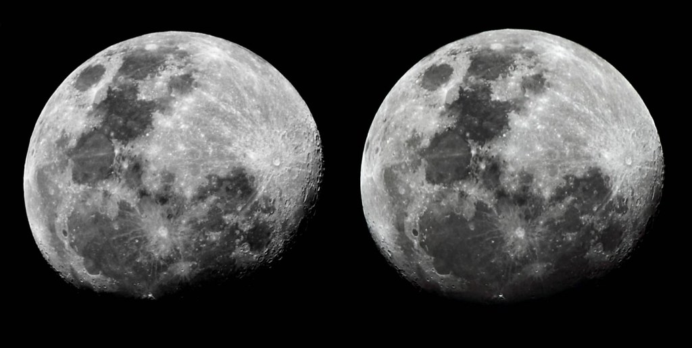

Mindful
Overview
Mindful is an empathy-driven VR concept. The goal was to create heartfelt immersive worlds that allow people to witness life through the eyes of another, and hopefully expand their views and perspectives. This first episode was originally created as a proof of concept, but as a result of ongoing current events and the widespread problem of human displacement around the globe, it's taking on an important life of its own. Episode 1 is a seated experience developed for the Oculus Rift in Unreal Engine 4.
- Platform: VR on PC
- Engine/Languages: Unreal Engine 4 (C++/Blueprints)
- Development time: 1 year 2 months
- Team size: 5
- Role: Gameplay Engineer
Gallery


Notes
As the sole programmer for Mindful, I was responsible for stringing together all the various assets that were made by the other team members as well as doing my main duty of implementing VR functionality and all of the gameplay mechanics. To make sure the team can work efficiently as possible, I also setup and managed a remote Perforce server that everyone had access to for source control. While there are many aspects of the experience I would like to write down, I would like to talk about some of my proudest technical achivements while working on Mindful.
3D In VR
While working on the portals in Mindful, I discovered something really interesting. 3D in VR. Wait a minute... aren't we already utilizing stereoscopy to make VR work normally? Yes, we are! However we can go further and create a steroscopic effect within our steroscopic VR headset, a "3D-ception". This is achieved by creating a material/shader that shows a different image based on which eye it is rendering the image for. Thus, we can create an effect similar to the ones you see in 3D films without 3D glasses because you are practically already wearing one!
The secret sauce is actually quite simple. In the materials asset, we can create a custom expression node to write one line of code that will return a 0 if the material is being rendered for the left eye and a 1 for the right eye.
In the code field you would input: return ResolvedView.StereoPassIndex;
After inputting the code, you just have to set the output type field to CMOT Float 1 and you are done with the most important part. Now that we are done with this part, there are two different ways we can do to
create the 3D effect. The first method requires you to provide a single image/texture while the other method requires you to provide a side by side image/texture.
Single Image Method
As the name suggests, this method just requires a singular image or video in the form of a texture. Using the custom node we created earlier, we can shift the texture UV coordinates for each eye so that they are slightly offset from each other. In my tests, shifting each texture by 0.05 to the left and right respectively was sufficient enough to create the 3D effect. You may experiment with this value however to yield a stronger or weaker 3D effect. You can also swap the left and right eye texture shift to create depth OR make the texture "pop out". Unfortunately, I am unable to demonstrate this on a flat screenshot or video so you will just have to take my word for it!
Side-By-Side Method
For this method, we require a side-by-side image/video texture and we separate each image for each eye. We can achieve this by retrieving one half of the texture by specifying the UV texture coordinates for each eye. 0 ~ 0.5 in the U coordinate for one eye and 0.5 ~ 1 in the U coordinate for the other eye. Then, we just do the same steps as the first method to create the 3D effect. Look at the image below if you are not sure what a side-by-side image looks like.
Conclusion
Once you have created the materials, you can apply these on a plane and they work like a charm. I imagine this neat trick can be used for things such as 3D art galleries or viewing 3D movies in VR, but I'm sure there are many more ways to fully utilize this knowledge on a VR experience or game. Please feel free to download and check out the example project from my GitHub with 3DVR implemented already if you so wish: Link